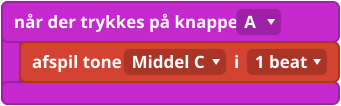
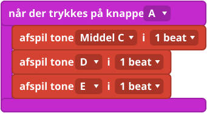
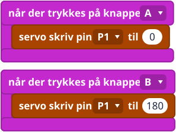

Hvad er det?
Lyd: en summer laver lyd ved at ryste luften meget hurtigt. Hver tone er et bestemt antal rystelser i sekundet. Blokken afspil tone (play tone) vælger tonen, og hvor længe den varer.
Bevægelse: en servo er en lille motor, der drejer sin arm hen til en vinkel og holder den der. Blokken servo skriv pin (servo write pin) bestemmer vinklen.
Sæt den i
- Passiv summer: sæt den i pin 0. På en V1 kommer lyden ud af pin 0.
- Mini-servo: sæt den i pin 1. Den sorte eller brune ledning skal sidde på den sorte række (G), og den røde ledning i midten. Drej ikke armen med hånden: så kan du ødelægge tandhjulene inden i.
En servo kan bruge meget strøm. Hvis micro:bit'en starter forfra eller opfører sig mærkeligt, så prøv batteripakken.
Blokkene
afspil tone og rest ligger i Musik (Music). servo skriv pin ligger i Pins under Avanceret (Advanced).


Små eksempler



Prøv det her
- Spil de første fire toner af en sang, du kender.
- Sæt en rest ind mellem to toner.
- Få servoen til at vinke: 0, 180, 0 med pauser imellem.
- Sværere: spil en tone, hver gang servoen flytter sig.
Typiske fejl
- Ingen lyd. På en V1 skal summeren sidde i pin 0. Tjek stikket og ledningernes farver.
- Servoen rykker, eller micro:bit'en starter forfra. Servoen bruger måske mere strøm, end micro:bit'en kan give. Prøv batteripakken.
- Servoen bevæger sig ikke. Tjek, at den sorte eller brune ledning sidder på den sorte række (G), og at pinnen i blokken passer.
Koden skrevet som tekst
JavaScript: music.playTone(262, music.beat(BeatFraction.Whole))
pins.servoWritePin(AnalogPin.P1, 90)
Python: music.play_tone(262, music.beat(BeatFraction.WHOLE))
pins.servo_write_pin(AnalogPin.P1, 90)
V1 og V2
En V2 har sin egen højttaler, så lyden kommer også ud af den. Kun V2 Blokken indstil indbygget højttaler (set built-in speaker) slukker for den, hvis du kun vil bruge summeren.
Lærernoter
- Tid: 40 til 60 minutter.
- Det lærer de: lyd som tal, pauser og timing, vinkler.
- Tjek på jeres kit: at summeren spiller på pin 0, og om servoen kan køre på strøm fra USB eller skal have batteripakken.
- Billederne af blokkene er forenklede tegninger. Tjek de rigtige blokke i MakeCode.